大家好，我是冷逸。
最近AI圈最火的Agent产品，非Codex莫属。
那玩意好用是好用，但它只能用GPT模型，而且需要魔法。GPT-5.5这模型怎么说呢？在Agent编程上，它的上下文管理、自主规划能力和复杂任务能力确实很强。但审美是真的一言难尽，就总给人一种“浓眉大眼”的感觉。
毕竟Sam Altman自己都说过，“GPT-5.5 IQ很强，但不如Claude有品味”。让GPT-5.5写个网页，一眼看过去全是SaaS模板味，太理工思维了。
作为见惯了Claude、Kimi、Qwen、GLM、MiniMax前端审美的人，看到GPT-5.5出的页面，是真的会被丑哭。
怎么办？直到我遇到了Qoder Desktop。
跟Codex一样，它的核心也是Quest控制台驱动。你把需求往里一扔，比如“帮我实现一个用户登录功能”，剩下的拆解、分工、编码、测试，背后的单Agent或Experts专家团自己搞定，你回来验收成果就行。
而且，Qwen3.7-max、M3、K2.6、DeepSeek-V4这些最新的主力模型，它都支持。更重要的是，还支持接第三方Coding Plan，不消耗Credits。
如果你用Qwen3.7-Max的话，每天有200次的免费额度。
最关键是，这是中国团队做出来的Codex级产品，不用魔法，所有人都能用。
下面，我带大家沉浸式体验一下。
一手体验
0）前置准备
首先，前往 qoder.com/desktop，下载安装「Qoder Desktop」。
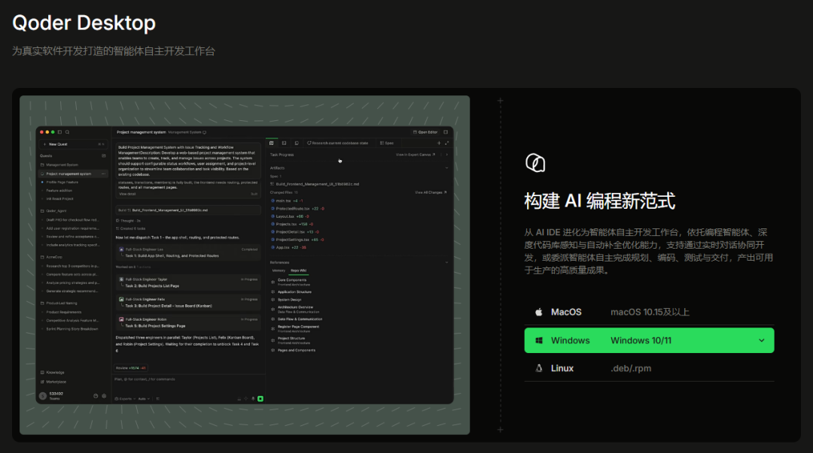
注意别选错了，不是Qoder Work，也不是Qoder Wake。macOS、Windows、Linux均支持，也有手机APP，可以从手机端遥控桌面Qoder。
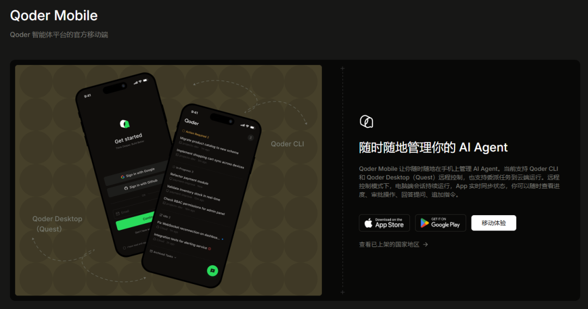
安装完先看界面。
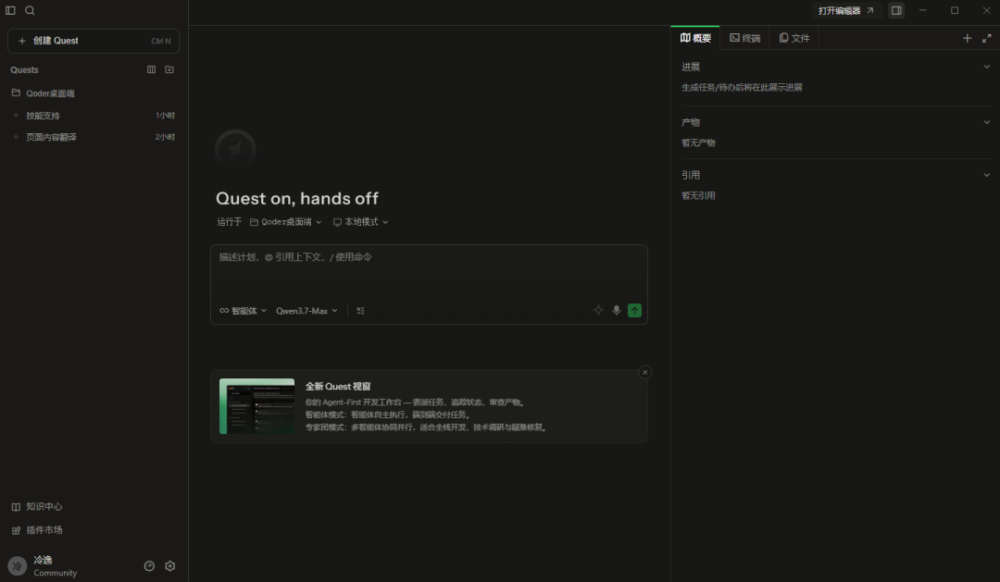
典型三栏布局：Quest任务管理区、Chat会话区、产物功能面板。功能面板里有任务概要、pwsh执行终端和产物预览窗口，设计很清晰。
这里顺便科普一下「Quest」这个概念，这是Qoder整个产品逻辑的核心设计，也是它区别于普通AI工具的地方。
普通AI Chat是单次任务委派（Task Delegation），一问一答，完成就散，没有任何状态延续。Quest不一样，它是一个Agent-First的开发工作台，涵盖任务委派、状态追踪、产物审查等全流程环节，端到端把任务跑完。
工作模式分两种：单Agent处理日常任务，Experts专家团处理复杂全栈开发。你只需描述目标，AI从需求澄清到产物交付，全程在统一的任务界面里推进，中间的执行细节你不需要操心。
核心理念是「Define the goal. Review the result」，设立目标，交付结果。
来重点看一下Chat会话区的几个配置项，有几个地方很值得聊：
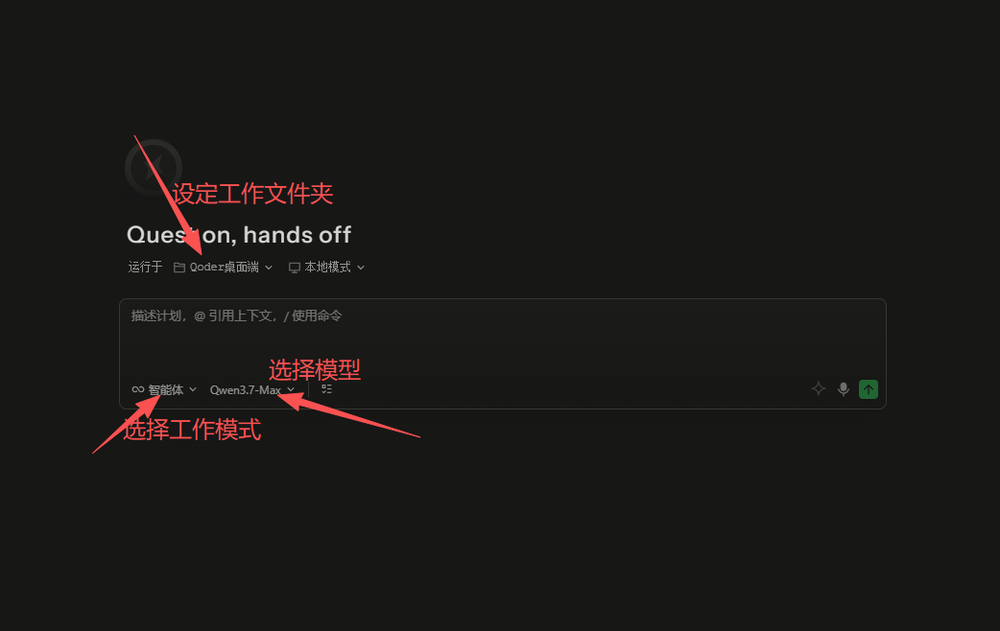
工作文件夹：建议每次任务单独选一个文件夹，这样Qoder只在这个范围内动，不会污染你其他的项目，也方便事后归档和版本管理。
工作模式：单Agent适合日常任务，Experts适合全栈开发和复杂任务（需要自己配置Sub-Agent，下面专门讲）。
模型选择：Qwen、MiniMax、GLM、Kimi、DeepSeek等都能自由选，不锁死在某一家，这点很关键。
还有一个Spec驱动模式，勾选之后，每次执行任务前会先跟你对齐需求、生成结构化Spec，由你审核确认后再执行。这不是「即兴编程」，而是正经的「需求澄清→执行→验收」工作流，适合需要可追溯需求和验收标准的开发场景。对于稍微复杂一点的任务，我强烈建议开启这个模式，否则AI容易自由发挥过头。
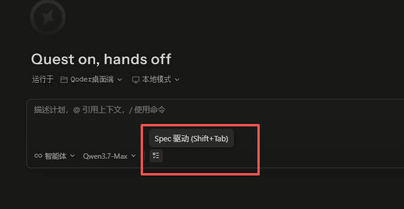
上下文通过@的方式调用，可以@具体文件或文件夹；输入斜杠/，是调用具体的Sub-Agent或skill。
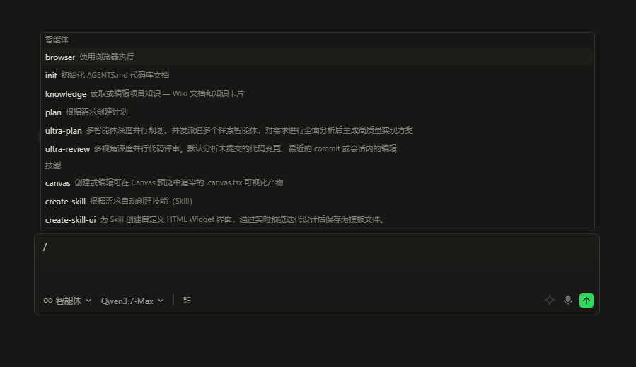
说实话，上下文调用这里有一点不太方便：不能像Codex那样直接上传附件，必须用@来引用。体验差了点，希望后续能补上。
1）Case1：多步骤任务
前几天，Anthropic有篇博客很火，叫《When AI builds itself》，全是英文。
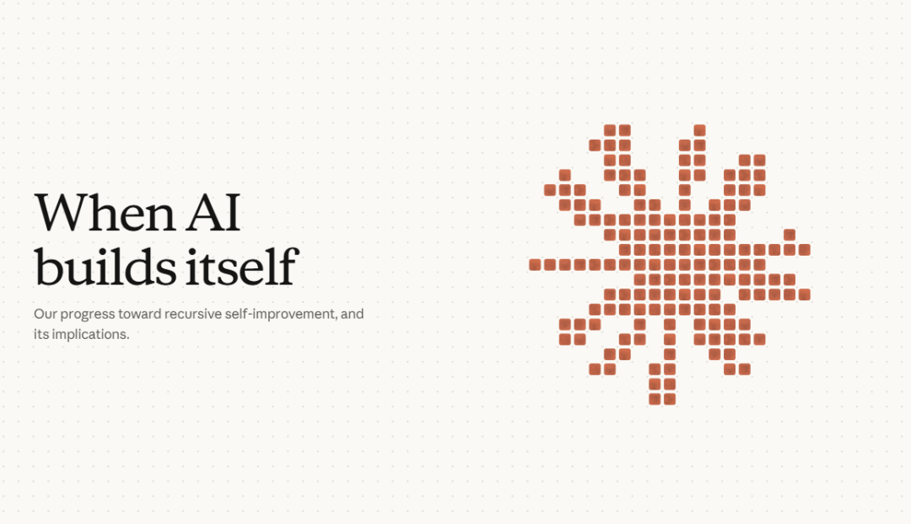
我直接把链接丢给Qoder，让它翻译并生成Markdown文件。
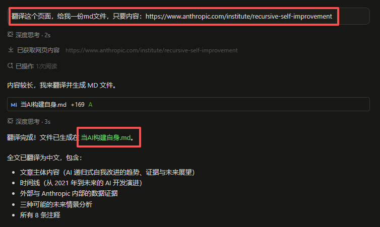
生成pdf文件。
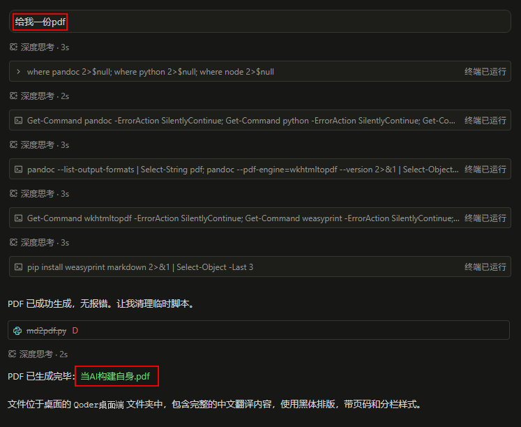
在MD里加数据图，Qoder会自己下载相关图片并嵌入。
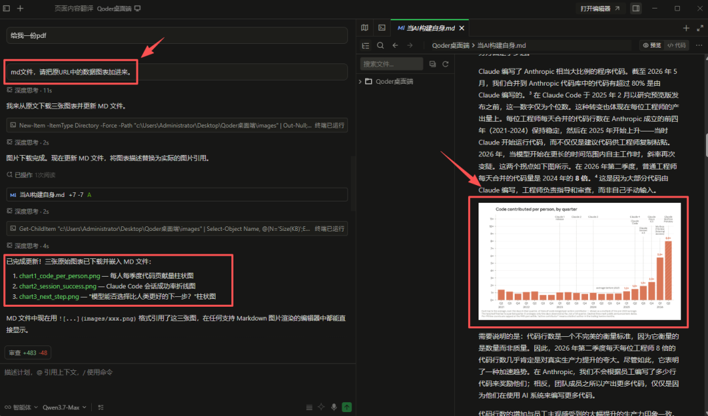
最后调用skill生成PPT。
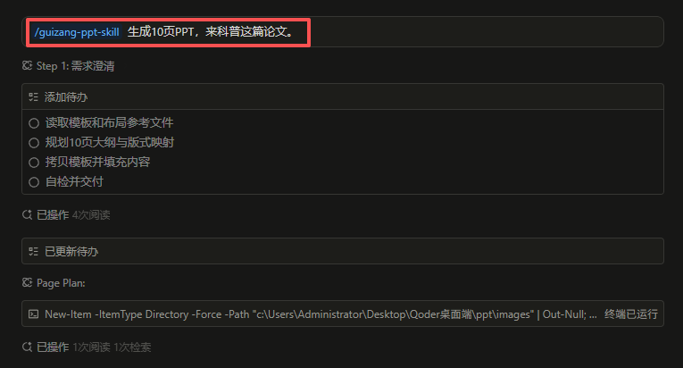
这是最终的PPT。
这一个Quest，就涵盖了browser use、websearch、写脚本、调用skill、图片下载、coding生成这几类不同能力的任务，你通通不用管中间怎么实现，只管下任务、看过程、验收产物。
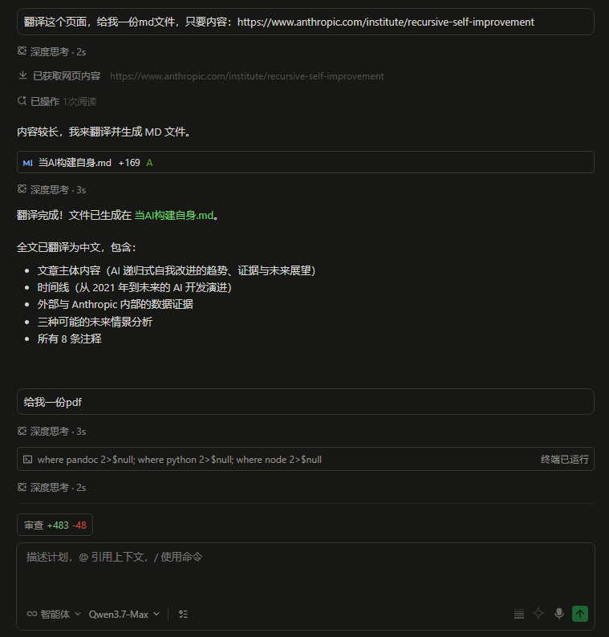
这就是Agent真正的价值所在。每个Quest任务都有独立视窗，下任务→看Quest Board→验收产物，AI全程规划和写代码。
过去那种「我想要xx，但得自己拆成ABCD四个步骤一步步喂给AI」的模式，算是正式终结了。
2）Case2：修复代码
上周我横测了四大模型的coding能力，DeepSeek生成的网页简直是灾难，视觉上一塌糊涂。
现在直接让Qoder帮我审查代码并重新优化网页。
得益于Qoder的上下文机制，输入@Folders 就可以直接索引整个仓库，它能完整理解项目的目录结构、文件依赖关系和业务逻辑，而不是一个只看单文件的AI。这对重构类任务来说很重要，少了全局视角，重构就是打补丁。
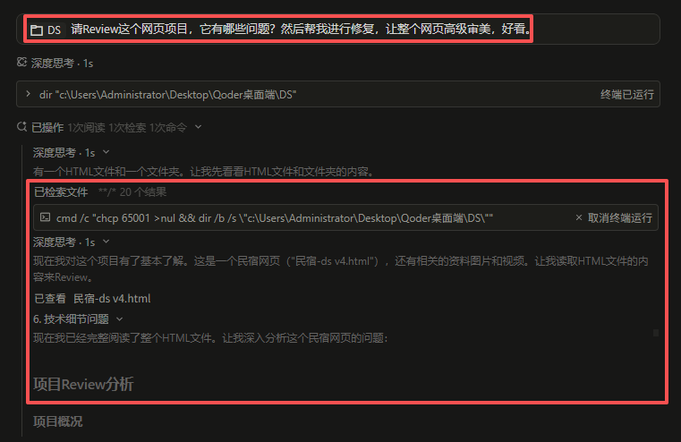
Qoder做了完整的代码Review分析。
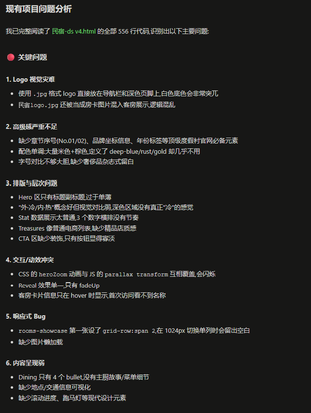
然后拆成12步计划进行重构。
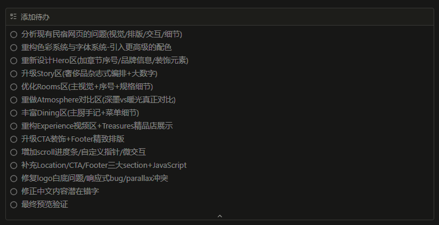
看一下前后对比：
DeepSeek-V4-Pro：
（可上下滑动，查看全图）
Qoder优化后：
Qoder优化后，视觉上明显耐看了很多，信息层级、配色逻辑、组件结构都做了大幅改善。
这里有一点值得说：优秀的模型，加上Qoder这层工具harness，把模型优势给放大出来了。好的弹药，得配好的枪，才能发挥出好的效果。
3）外接coding plan
体验中有一个地方让我惊到了：Qoder可以接第三方的Coding Plan，而不是只能绑着阿里Qwen的模型走。
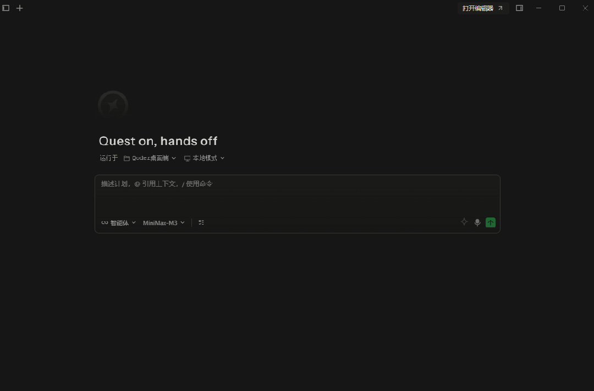
这点，比Codex开放多了。
我很早就抢到了智谱的Coding Plan，现在直接把它接进Qoder。不需要管API地址是OpenAI格式还是Anthropic格式，只需要输入key就行。
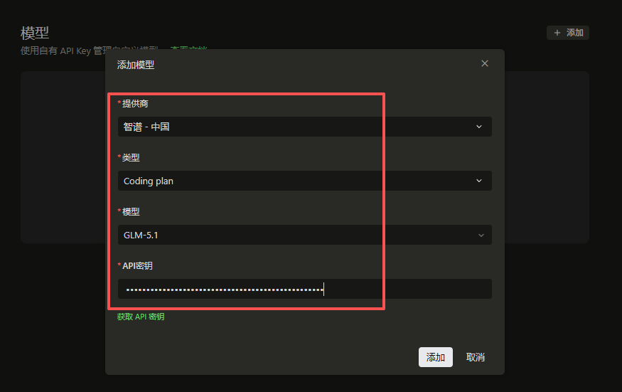
这样，我就能在Qoder里用纯正的glm-5.1了。
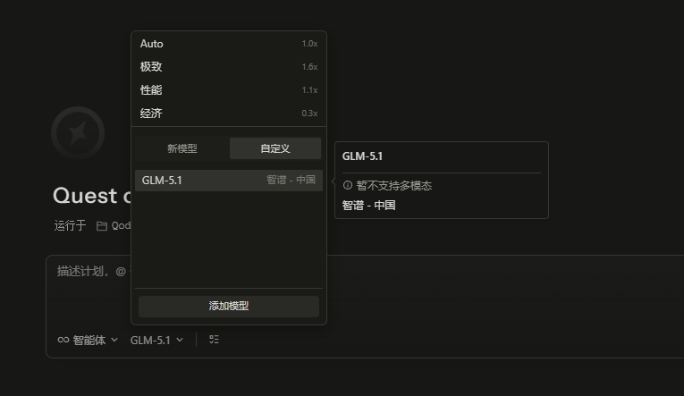
这背后其实是一个很重要的产品决策：把模型层的选择权还给用户，工具层专注做好编排和交付。
接入glm-5.1之后，我们跑一个案例：
提示词：Create a single HTML file containing a fully functional 3D Rubik's Cube simulation using Three.js (via CDN). The cube must be able to automatically solve itself.
中文：创建一个HTML文件，其中使用Three.js（通过CDN方式引入）来实现一个功能完备的3D魔方模拟程序。该魔方必须能够自动完成自己的“解谜”过程。
出来的结果很对味，一看就是glm-5.1的风格，建模的阴影细节、色彩搭配和运行逻辑都是GLM独有的审美调调。
别看这个case逻辑简单，很多模型要么跑不出来，要么跑出来但动画解法逻辑是错的，底层的旋转矩阵和逻辑设计其实相当有难度。
事后我去后台看了一眼Credits消耗，接glm-5.1跑的这段时间，消耗为0。
这种纯BYOK（Bring Your Own Key，自带密钥）、零成本的体验，确实很爽。
没有Coding Plan也不要紧，Qwen3.7-max每天200次免费，注册即用。
4）专家团
前几天，好朋友@云中江树 说了一段话，我很认同：
「AI极其擅长平地起高楼这种从0到1的事情，但1到100的修补和打磨，就显得极其吃力。所以，真正的扬长避短，不是逼着AI去修补旧逻辑的破洞，而是把所有复杂的系统工程，强制切割成无数个干净的“从0到1”。」
这句话说到了点子上。就像早些年我们用大模型「换话题必须新开Chat」一样，Coding任务用Sub-agent（子智能体）来驱动，是今天必须做的事情。
把任务拆分不是为了提高并发，而是把一个复杂的问题拆成AI舒适区的无数次从0到1。让每个子Agent只干自己最擅长的那一件事：规划的负责规划、写代码的负责写代码、测试的负责测试、审查的负责审查，四者互相校验，出错率大幅降低，交付质量自然就上去了。
Qoder的专家团模式正是基于这个逻辑。它把一个需求自动拆给规划/工程/测试/审查多个专家协同工作，内置了多种预设专家团，也支持自由组合调用，甚至自建。
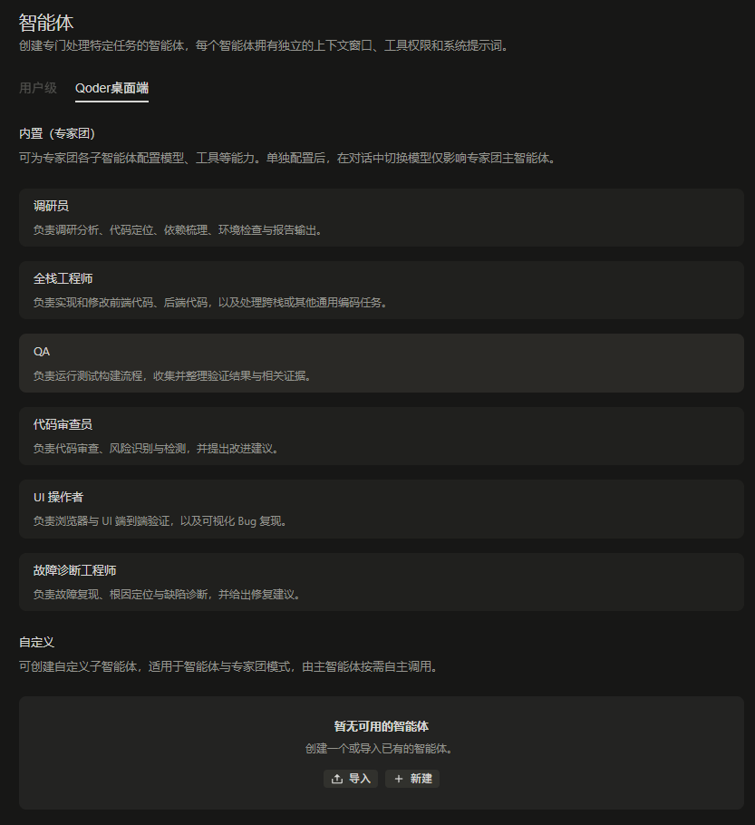
自建子Agent方式很简单，输入 /create-subagent 就能调用skill来创建。
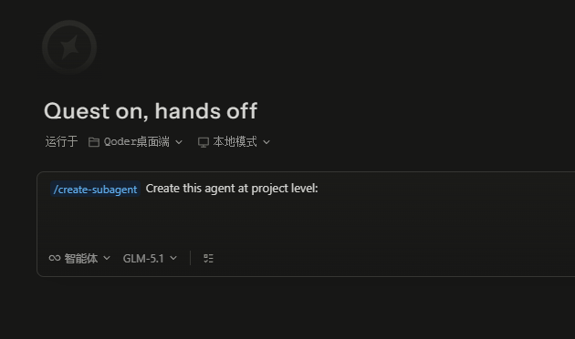
专家团有Auto和极致两种模式可选。
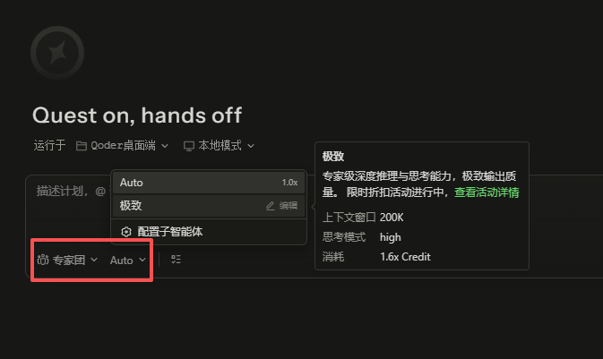
日常「极致」模式比较消耗credits（1.6倍），不过他们正在搞活动，付费用户，credits只有0.8倍，背后是Opus 4.8，特别划算。
写在最后
整个体验下来，Qoder Desktop这款产品算是做到位了。
功能上不必扭扭捏捏，Codex有的它都有——Quest控制台、知识中心、skill市场，一个不少。Codex没有的，它也更开放——专家团协作、外接Coding Plan。
这款产品本质上做的事情，是把「Agent的复杂度」从用户侧拿走，塞进产品侧消化掉。这条路以前只有OpenAI、Anthropic这些有闭环模型优势的公司才敢走，现在中国团队也在做，而且做出来了，这本身就值得被看见。
毕竟，模型是弹药，工具的harness才是枪。弹药再好，枪不对，你也打不准。
而现在，枪也有了，弹药还是免费的。